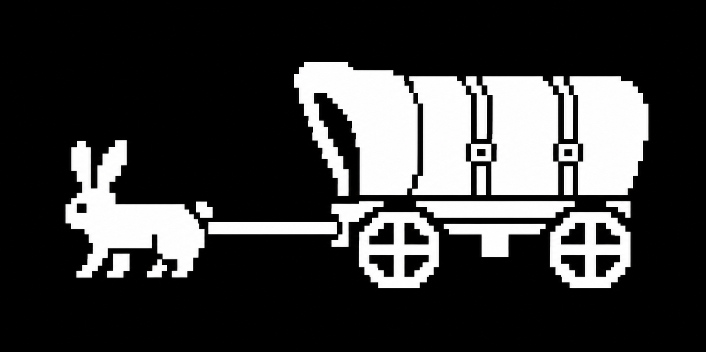

Initializing terminal...
QUICK PRESS:
Initializing terminal...
COTDB SYSTEM READY WELCOME TO THE WARREN

A bunny, a wagon, and a place for dial tones, hacker zines, and the old web.
Type help, browse the files, or take the wagon down the trail.